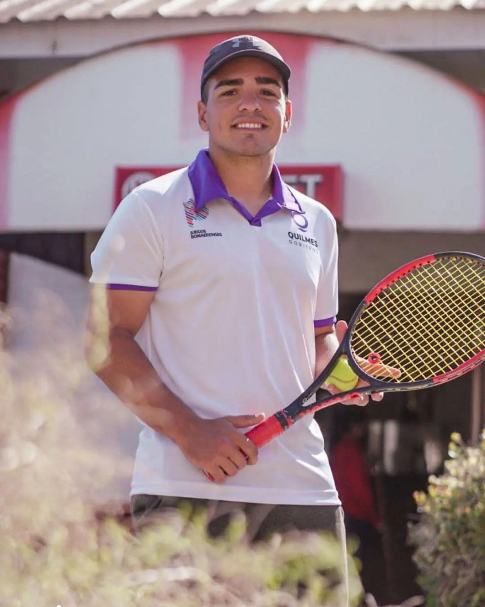

Curriculum vitae
Nicolas Delorte

Edad: 24
Domicilio: Quilmes
Experiencia laboral
- Entrenador de tenis en el Club Quilmes
- Entrenador de tenis en El Prado
- Distribucion mercaderia Bagues
- Diseño de redes en radio FM VOX
Estudios
- Escuela secundaria San Mauro - completo - 2010-2015
- Psicologia UBA - incompleto - 2016-2019
- Curso microsoft avanzado - completo - 2015
- Ingenieria en sistemas - en curso - 2020-actualidad
Perfil
Mi nombre es Nicolas Delorte soy estudiante en ingenieria en sistemas y entrenador nacional de tenis. Actualmente trabajo de entrenador en un club en Quilmes media jornada.
Mis intereses a futuro son poder trabajar en el area que estudio (sistemas) para poder ir sumando experiencia y poder desarrollarme.
En el ambito laboral me considero una persona exigente que intenta hacer siempre las cosas de la mejor manera, siempre aprendiendo e informandome sobre lo que ejerzo.
Si queres contactarme podes hacerlo a través de este formulario